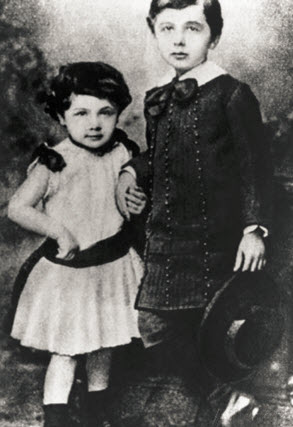

|  |
|
Anthropic Minds. (n.d). Maria (3 years old) and Albert Einstein (6 years old). [Photograph]. Retrieved from: http://www.anthropi cminds.com/albert-einstein.html |
Albert Einstein was the first child of Hermann and Pauline, a rich Jewish couple three years already into their marriage. Einstein's father started to work as a featherbed merchant, but when his business failed, the family moved to Munich so Hermann could launch an electric-engineering firm with his brother, a risk supported by his wife's parents.
Being a gifted musician, Einstein's mother introduced her young son to the piano at a young age. He went on to study the violin for seven years as a boy, and later in his life to boost his inspiration in his scientific thinking.
Two years after his birth, Einstein's parents had another child: this time, a girl named Maria, or nicknamed Maja. Einstein and Maria developed a close brother-sister bond over the years. In fact, Maria wrote a biography of her older brother in 1924, saying that when Einstein was born, his mother fretted that his head was too big for his body, and that his grandmother declared he was "much too fat."
When he was around four or five years old, Einstein got his first glimpse into science. When his father revealed to him a compass, little Einstein wondered at how the needle always pointed north. This curiosity would only fuel his scientific and intellectual capacity, as well as his tenacity that would lead to discovering some of the most ground-breaking laws of the universe.
http://www.truthworks.org/phunnies/anecdotes/compass-with-old-map/